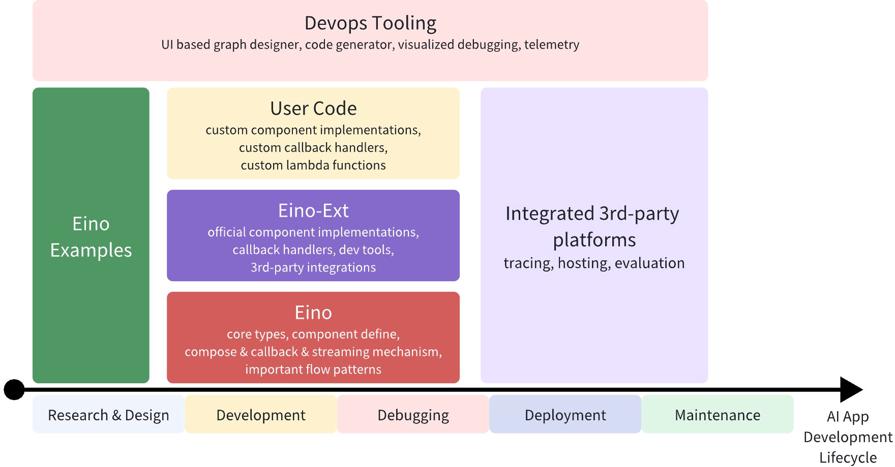
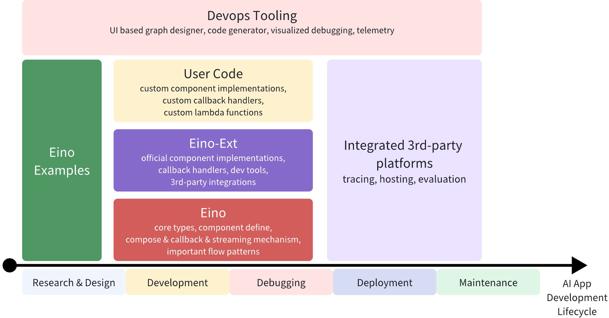

Eino介绍
本文详细介绍了Eino的系统架构、用例图、静态建模、状态机、时序图、对外API，可以系统了解Eino设计思想及原理 https://www.cloudwego.io/zh/docs/eino/overview/eino_open_source/
背景
字节跳动，基于Golang的大模型应用综合开发框架
- 覆盖开发、测试、运维全流程
- 提供大量组建使用

本文详细介绍了Eino的系统架构、用例图、静态建模、状态机、时序图、对外API，可以系统了解Eino设计思想及原理 https://www.cloudwego.io/zh/docs/eino/overview/eino_open_source/
字节跳动，基于Golang的大模型应用综合开发框架
